Bilan ODJ 2025 : comparaison STOC & SHOC
Contenu
Tendances ODJ et comparaison avec les observatoires STOC et SHOC
!!! Description du projet ODJ-STOC-SHOC
Décrire projet Marion, pourquoi nous nous posons ces questions, pourquoi c’est intéressant ?
2 suivis d’oiseaux depuis plus de 10 ans au national. Il faut s‘intéresser aux tendances calculées, ce qui fait émerger plusieurs questionnements. Qu’est-ce qu’on échantillonne, est ce que ce sont les mêmes populations ? Bien mettre en avant que ce ne sont pas les mêmes milieux.
Mise en avant des spécificités ODJ
Spécificités négatives et positives – bcp de données, milieu privé sans accès…
Dire que c’est une étude préliminaire (bien insister sur ce point) on utilise les mêmes types d’analyses que le bilan des oiseaux communs (STOC).
On a comparé les estimations sur les mêmes périodes avec les analyses statistiques (2014 2024).
Données
Listes des espèces comparables
Mettre en avant le nombre d’esp pour lesquelles on peut faire des comparaison (pas de tendance incertaines)
ODJ-STOC
Nombre d’espèce pour lesquelles il est possible de compararer les tendances temporelles entre les observatoires ODJ et STOC : 31
Listes des espèces comparées :
ODJ-SHOC
Nombre d’espèce pour lesquelles il est possible de compararer les tendances temporelles entre les observatoires ODJ et SHOC : 33
Listes des espèces comparées :
!!! Comparaison des tendances
!!! ODJ-STOC
Expliquer qu’il y a tant d’espèces avec des patterns différents et tant d’esp pour lesquelles on peut faire des comparaisons.
Figure à l’appui : camembert hiver/été avec tendances opposées et similaires (dans similaire mettre les tendances identiques et les tendances différentes ie stable versus déclin ou augmentation – ne pas expliquer cela au grand public).
!!! ODJ-SHOC
Expliquer qu’il y a tant d’espèces avec des patterns différents et tant d’esp pour lesquelles on peut faire des comparaisons.
Figure à l’appui : camembert hiver/été avec tendances opposées et similaires (dans similaire mettre les tendances identiques et les tendances différentes ie stable versus déclin ou augmentation – ne pas expliquer cela au grand public).
Nombre d’espèces déclin/augmentation/stable
ODJ
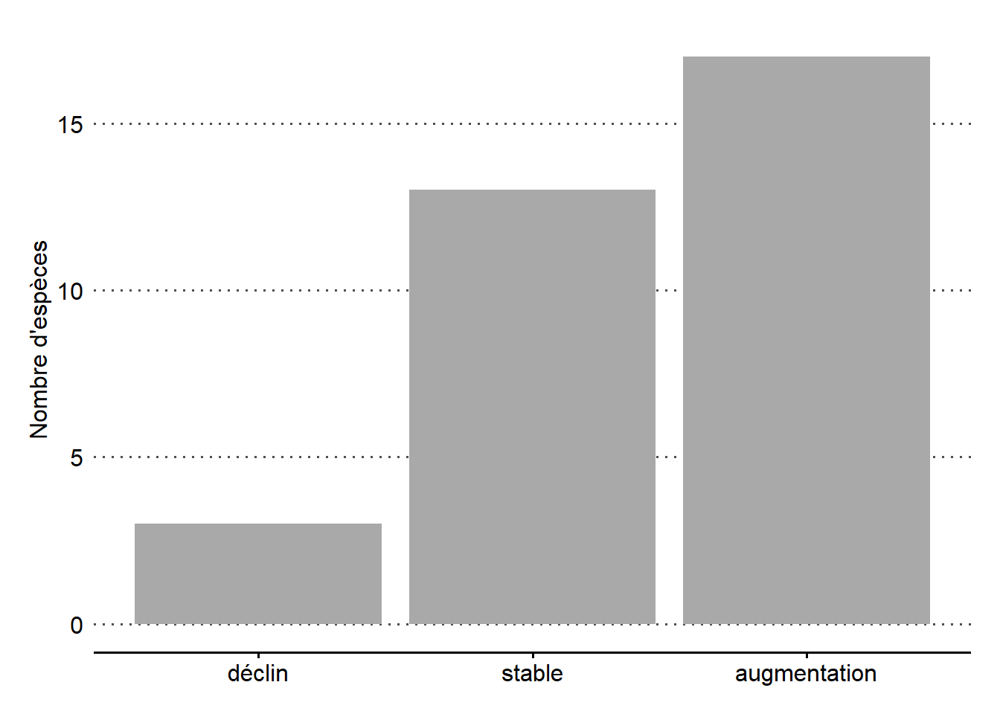
ODJ-STOC
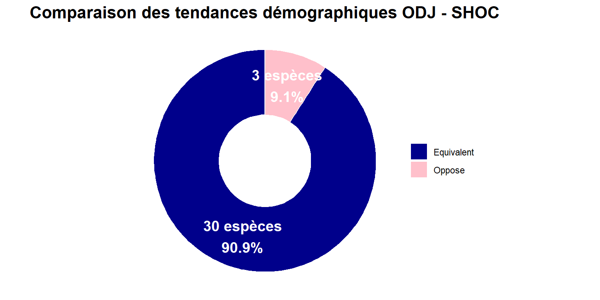
ODJ-SHOC
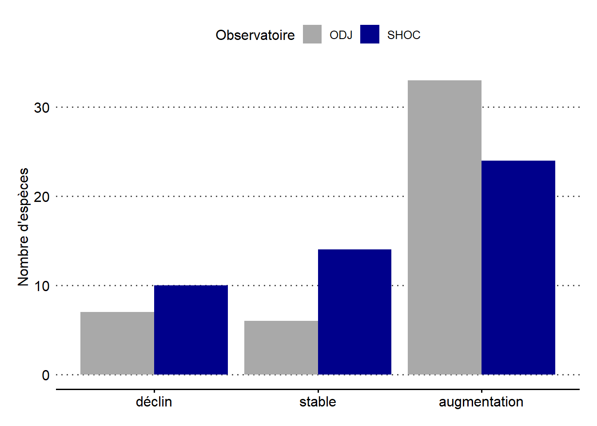
!!! Interprétation des résultats
Bien préciser que cela ouvre de nouvelles pistes d’analyse et de suivi. On illustre cela avec quelques exemples (texte)
Bien mettre en avant que le pourcentage d’opposé est plus faible que le similaire (texte)
!!! ODJ-STOC
!!! ODJ-SHOC
!!! Exemple d’espèce à mettre en avant
Pour chaque espèce mettre graphique de tendance commun ODJ et STOC/SHOC, une photo, un texte avec divers éléments sur l’espèce (écologie, conseils, explication tendance…)
Graphique : une ligne par suivi, avec la pente estimée pour chaque suivi, et des couleurs différentes par suivi, en plein quand sign, en pointillé quand non sign/stable
Se baser sur les sorties graphiques produites par Gwen
ATTENTION : penser à bien revérifier les tendances du STOC et SHOC qui seront publiées dans le rapport qui sortira à l’automne
Verdier d’Europe
ODJ-STOC
Tendance similaire
!!!!!!!!!! ajout pourcentage dans les graphiques !!!!!!!!!!
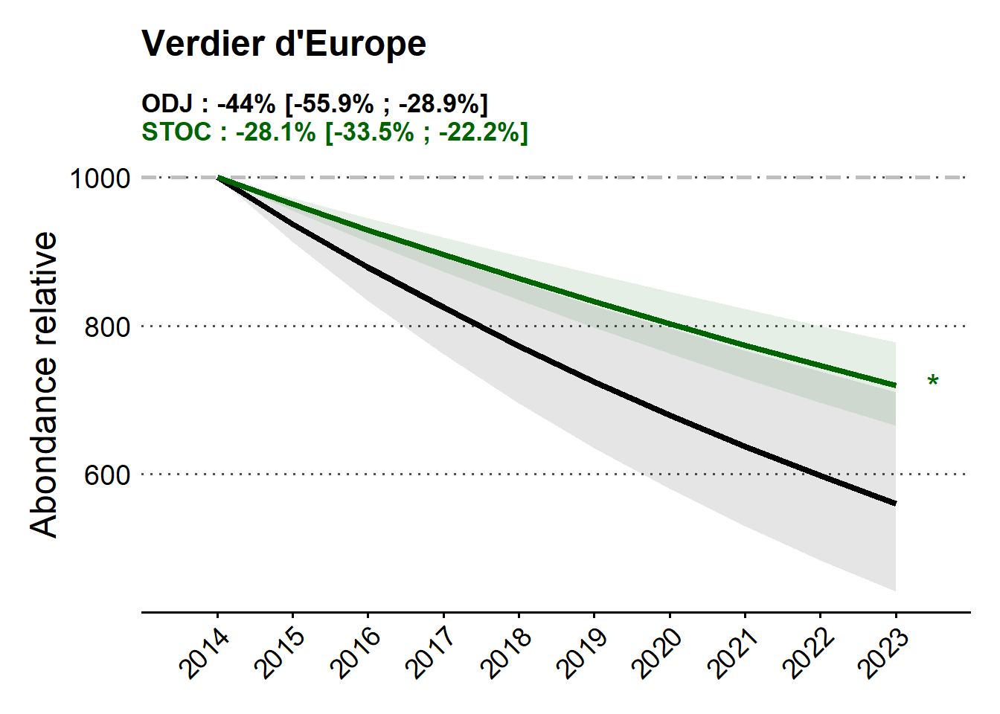
# A tibble: 2 × 12
species Protocole minYear maxYear estimate pval infIC supIC perc
<chr> <chr> <dbl> <dbl> <dbl> <dbl> <dbl> <dbl> <chr>
1 Verdier d'E… STOC 2014 2023 -0.0424 1.59e-20 -0.0514 -0.0335 -31.…
2 Verdier d'E… ODJ 2014 2023 -0.0285 6.64e- 6 -0.0408 -0.0161 -22.…
# ℹ 3 more variables: infPerc <chr>, supPerc <chr>, tendance_bilan <fct># A tibble: 2 × 12
species Protocole minYear maxYear estimate pval infIC supIC perc infPerc
<chr> <chr> <chr> <chr> <chr> <chr> <chr> <chr> <chr> <chr>
1 Verdier d'… STOC 2014 2023 -0.0424… 1.59… -0.0… -0.0… -31.… -37
2 Verdier d'… ODJ 2014 2023 -0.0284… 6.64… -0.0… -0.0… -22.… -30.80
# ℹ 2 more variables: supPerc <chr>, tendance_bilan <chr>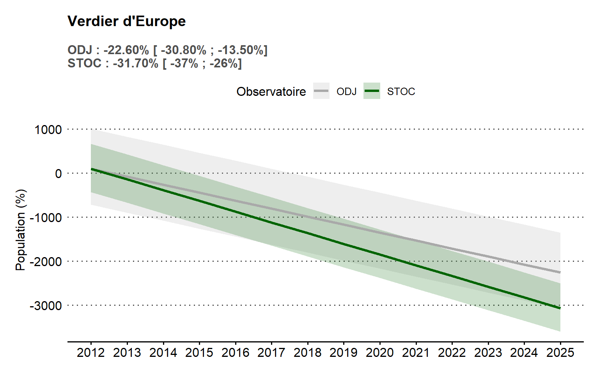
ODJ-SHOC
Tendance similaire
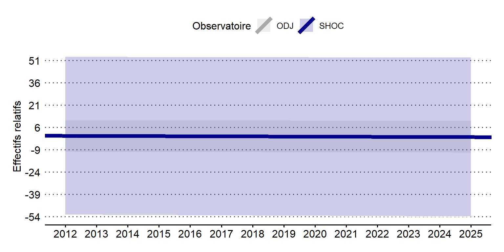
V2 from routine
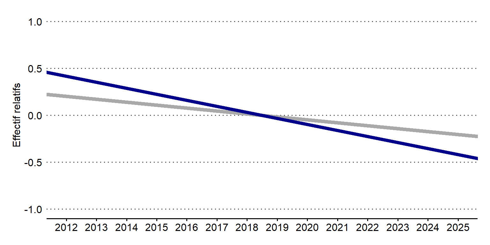
!!! Sittelle torchepot
différence pour hiver avec explications
ODJ-STOC
Tendance similaire

ODJ-SHOC
Tendance similaire
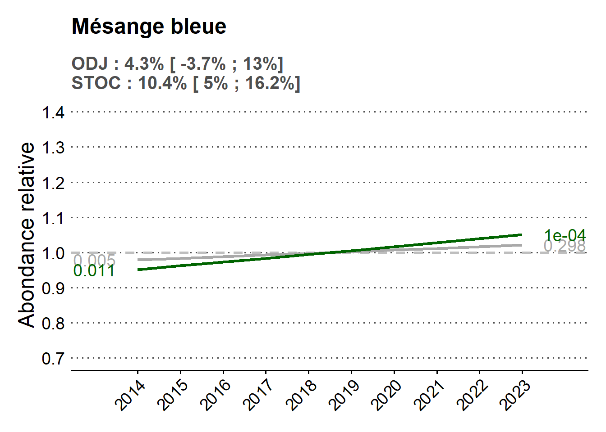
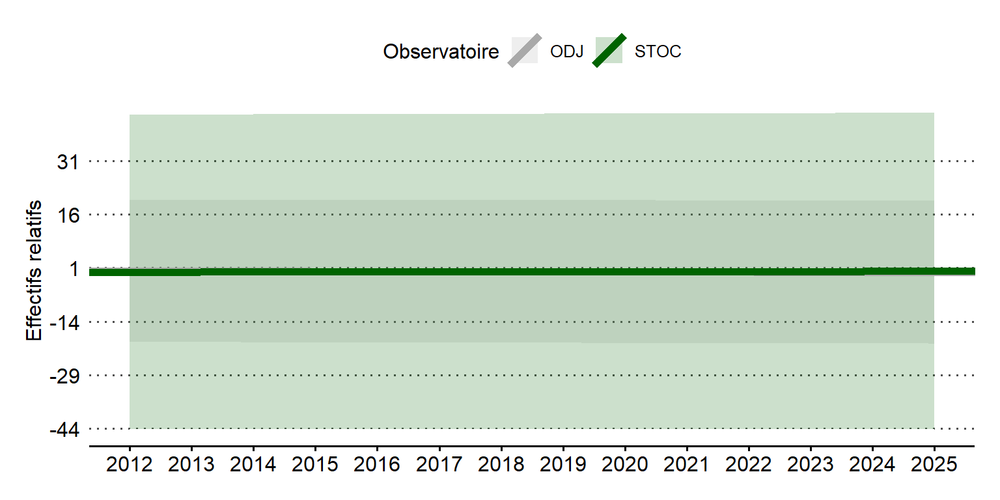
!!! Grosbec casse noyaux
tendances opposées
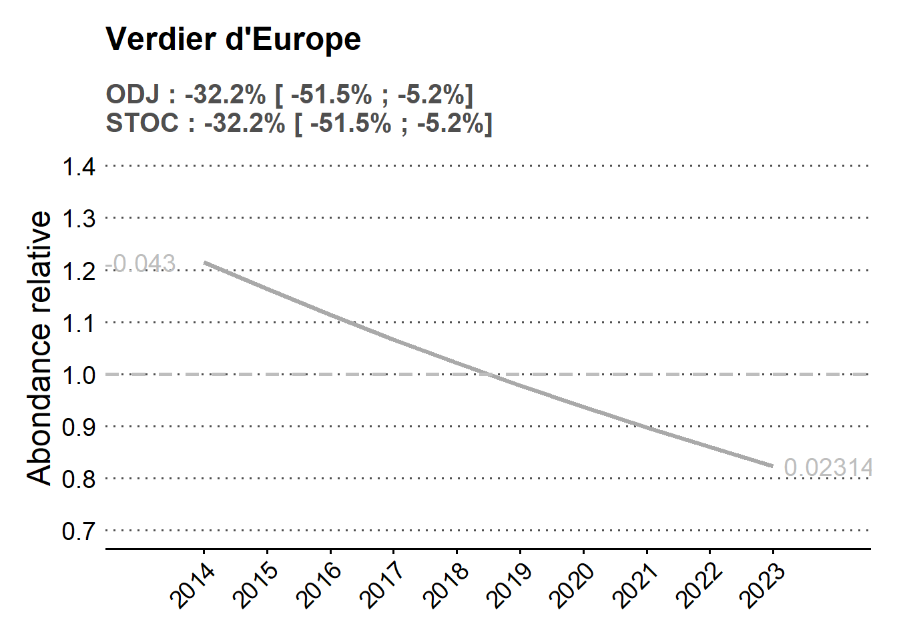
!!! Rougegorge
tendances similaires été et hiver
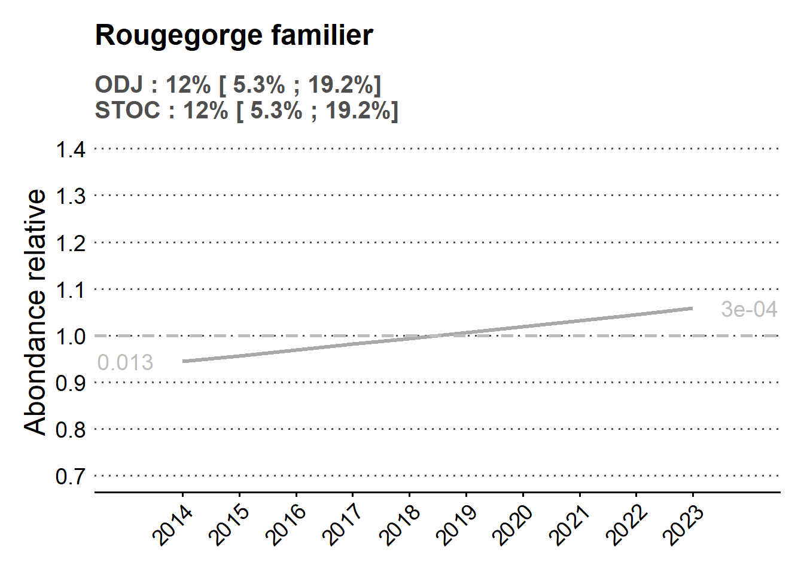
!!! Mésange bleue
tendances similaires
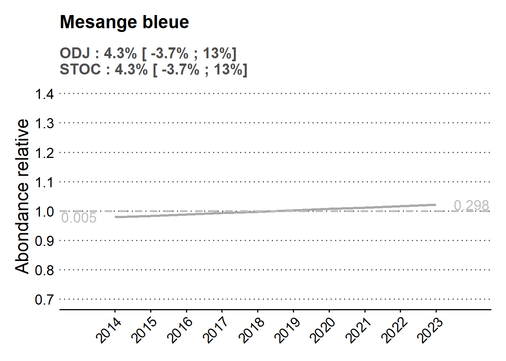
!!! Pinson des arbres
tendances similaires